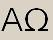

|  |
This function is used to start a behavior function referred by a behavior type variable that refers to a behavior name (reference for function name, altstep name or testcase name).
Related keyword:
derefers ( reference_var ) ( arguments ) |
The reference_var denotes a behavior type variable that refers to a function, an altstep or a testcase.
The arguments denotes the argument list of the function, see function.
Details and examples can be found under behavior_type.